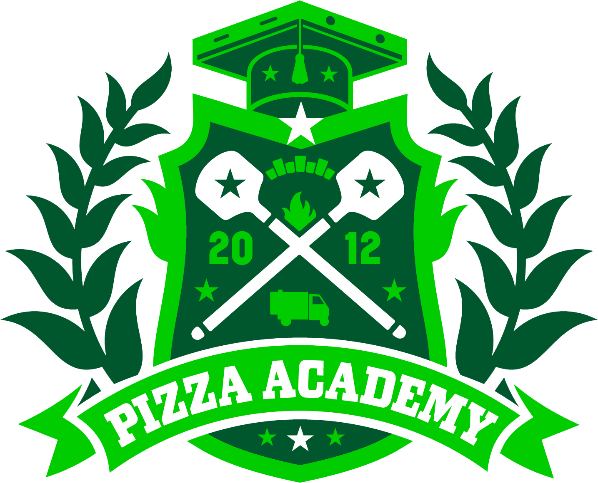

A Deep Dive is a broken down job description, line by line, that tells you everything that your job role is responsible for. At any point during your career, you can check out all the aspects of your role to make sure you’re an expert before preparing to move onto the next role.
This can work as either a snapshot or working document. Print, read and either tick ✓, or number each line. Spend some time with your manager to gauge how many of these areas you are already a champion in, and what you need to do next to fine tune other areas so you can really excel.
Total completion: